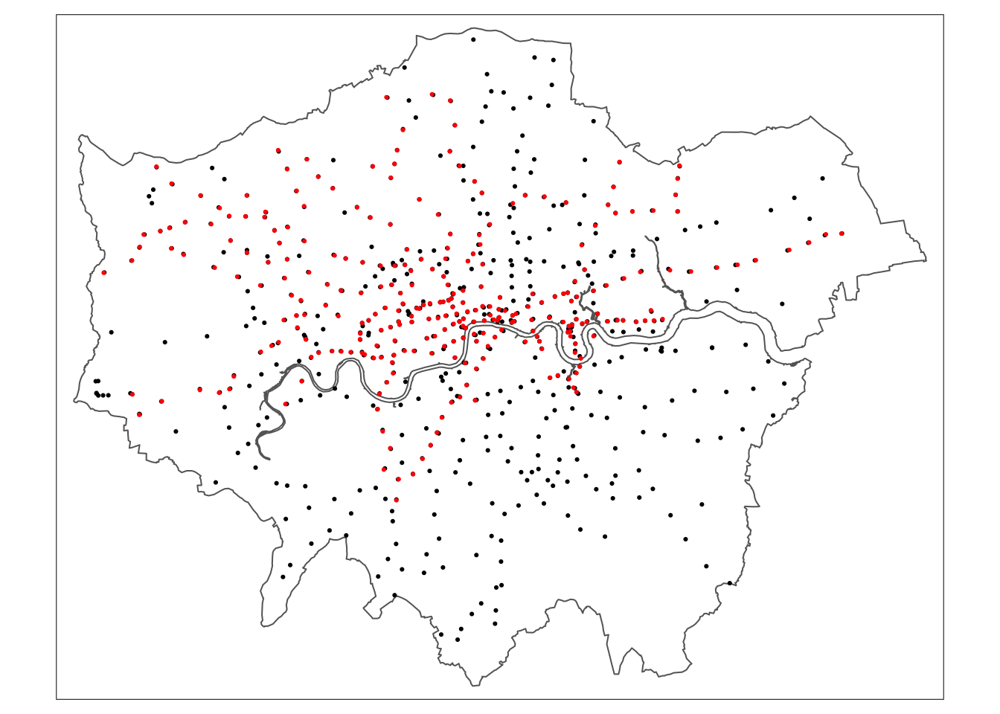
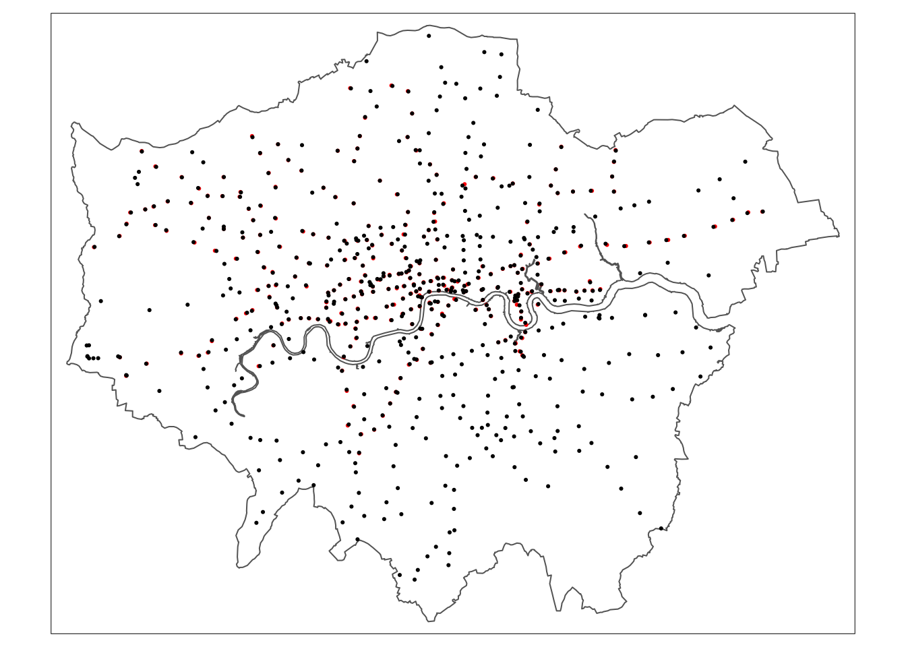
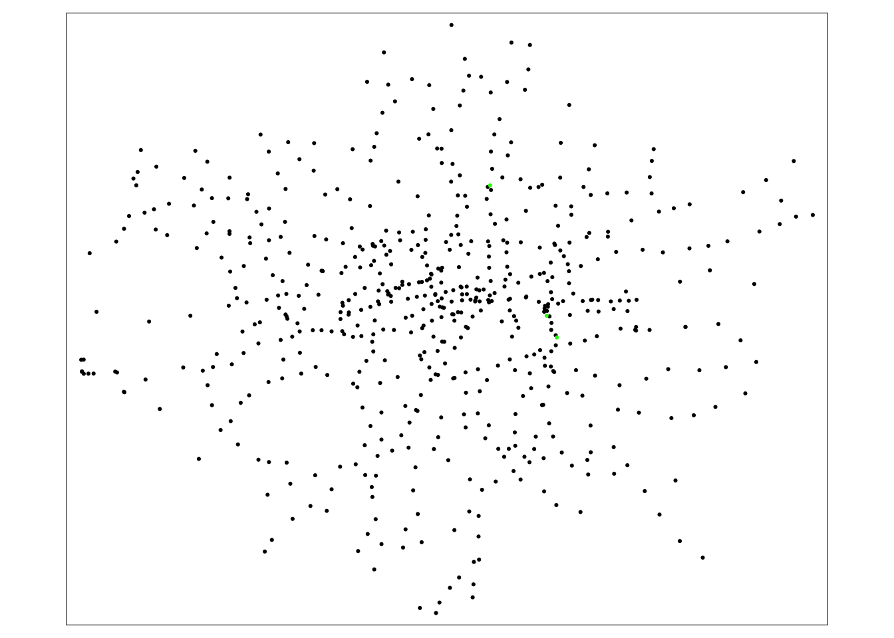

R code
# plot our London MSOAs
tm_shape(msoa_london) +
tm_fill() +
# then add bike crime
tm_shape(bike_theft) +
tm_dots(col = "blue") +
# then add stations
tm_shape(london_stations) +
tm_dots(col = "red")
This week, we look at geometric operations and spatial queries — the fundamental building blocks when it comes to spatial data processing and analysis. This includes operations such as calculating the distances separating one or more spatial objects, running a buffer analysis, and conducting point-in-polygon calculations.
The slides for this week’s lecture can be downloaded here: [Link]
This week, we will be investigating bike theft in London in 2021 and look to confirm the hypothesis that bike theft primarily occurs near tube and train stations. We will be investigating its distribution across London using the point data provided within our crime dataset. We will then compare this distribution to the location of train and tube stations using specific geometric operations and spatial queries that can compare the geometry of two (or more) datasets. We will also learn how to download data from OpenStreetMap as well as use an interactive version of tmap to explore the distribution of the locations of individual bike theft against the locations of these stations.
Open a new script within your GEOG0030 project and save this script as wk6-bike-theft-analysis.r. At the top of your script, add the following metadata:
R code
# Analysing bike theft in London using geometric analysis
# Date: January 2024Now let us add all of the libraries we will be using today to the top of our script:
R code
# load libraries
library(tidyverse)
library(sf)
library(tmap)
library(osmdata)This week, we will start off using three datasets: the London MSOA boundaries for 2021, recorded crime in London for 2021 from data.police.uk, and the locations of the train and tube stations from Transport for London. We already downloaded the crime data for 2021 during Week 4’s computer tutorial and we also saved the 2021 London MSOA boundaries last week, so we only need to download a dataset containing train and tube stations in London.
| File | Type | Link |
|---|---|---|
| Train and tube stations in London | kml |
Download |
Once downloaded, move your tfl_stations.kml download to your raw data folder and create a new transport folder to contain it. After this, let’s load our London MSOA file:
R code
# read in our MSOA GeoPackage
msoa_london <- st_read("data/raw/boundaries/MSOA2021_London.gpkg")Reading layer `MSOA2021_London' from data source
`/Users/justinvandijk/Library/CloudStorage/Dropbox/UCL/Web/jtvandijk.github.io/GEOG0030/data/raw/boundaries/MSOA2021_London.gpkg'
using driver `GPKG'
Simple feature collection with 1002 features and 4 fields
Geometry type: MULTIPOLYGON
Dimension: XY
Bounding box: xmin: 503574.2 ymin: 155850.8 xmax: 561956.7 ymax: 200933.6
Projected CRS: OSGB36 / British National GridCheck the CRS of our msoa_london spatial dataframe:
R code
# inspect CRS
st_crs(msoa_london)Coordinate Reference System:
User input: OSGB36 / British National Grid
wkt:
PROJCRS["OSGB36 / British National Grid",
BASEGEOGCRS["OSGB36",
DATUM["Ordnance Survey of Great Britain 1936",
ELLIPSOID["Airy 1830",6377563.396,299.3249646,
LENGTHUNIT["metre",1]]],
PRIMEM["Greenwich",0,
ANGLEUNIT["degree",0.0174532925199433]],
ID["EPSG",4277]],
CONVERSION["British National Grid",
METHOD["Transverse Mercator",
ID["EPSG",9807]],
PARAMETER["Latitude of natural origin",49,
ANGLEUNIT["degree",0.0174532925199433],
ID["EPSG",8801]],
PARAMETER["Longitude of natural origin",-2,
ANGLEUNIT["degree",0.0174532925199433],
ID["EPSG",8802]],
PARAMETER["Scale factor at natural origin",0.9996012717,
SCALEUNIT["unity",1],
ID["EPSG",8805]],
PARAMETER["False easting",400000,
LENGTHUNIT["metre",1],
ID["EPSG",8806]],
PARAMETER["False northing",-100000,
LENGTHUNIT["metre",1],
ID["EPSG",8807]]],
CS[Cartesian,2],
AXIS["(E)",east,
ORDER[1],
LENGTHUNIT["metre",1]],
AXIS["(N)",north,
ORDER[2],
LENGTHUNIT["metre",1]],
USAGE[
SCOPE["Engineering survey, topographic mapping."],
AREA["United Kingdom (UK) - offshore to boundary of UKCS within 49°45'N to 61°N and 9°W to 2°E; onshore Great Britain (England, Wales and Scotland). Isle of Man onshore."],
BBOX[49.75,-9,61.01,2.01]],
ID["EPSG",27700]]Of course it should be of no surprise that our msoa_lon spatial dataframe is projected in OSGB36 / British National Grid, however, it is always good to check and avoid problems down the line. Let’s go ahead and read in our tfl_stations dataset as well:
R code
# load stations
london_stations <- read_sf("data/raw/transport/tfl_stations.kml")This dataset is provided as a kml file, which stands for Keyhole Markup Language (KML). KML was originally created as a file format used to display geographic data in Google Earth. So we definitely need to check what CRS this dataset is in and decide whether we need to reproject the data.
R code
# inspect CRS
st_crs(london_stations)Coordinate Reference System:
User input: WGS 84
wkt:
GEOGCRS["WGS 84",
DATUM["World Geodetic System 1984",
ELLIPSOID["WGS 84",6378137,298.257223563,
LENGTHUNIT["metre",1]]],
PRIMEM["Greenwich",0,
ANGLEUNIT["degree",0.0174532925199433]],
CS[ellipsoidal,2],
AXIS["geodetic latitude (Lat)",north,
ORDER[1],
ANGLEUNIT["degree",0.0174532925199433]],
AXIS["geodetic longitude (Lon)",east,
ORDER[2],
ANGLEUNIT["degree",0.0174532925199433]],
ID["EPSG",4326]]The result informs us that we are going to need to reproject our data in order to use this dataframe with our msoa_london spatial dataframe. Luckily in R and the sf library, this reprojection is a relatively straightforward with the st_transform() function. The function is very simple to use: you only need to provide the function with the input dataset that you want to reproject and the EPSG code of the target CRS.
R code
# reproject our data from WGS84 to BNG
london_stations <- st_transform(london_stations, 27700)We can double-check whether our new variable is in the correct CRS by using the st_crs() function again:
R code
# inspect CRS
st_crs(london_stations)Coordinate Reference System:
User input: EPSG:27700
wkt:
PROJCRS["OSGB36 / British National Grid",
BASEGEOGCRS["OSGB36",
DATUM["Ordnance Survey of Great Britain 1936",
ELLIPSOID["Airy 1830",6377563.396,299.3249646,
LENGTHUNIT["metre",1]]],
PRIMEM["Greenwich",0,
ANGLEUNIT["degree",0.0174532925199433]],
ID["EPSG",4277]],
CONVERSION["British National Grid",
METHOD["Transverse Mercator",
ID["EPSG",9807]],
PARAMETER["Latitude of natural origin",49,
ANGLEUNIT["degree",0.0174532925199433],
ID["EPSG",8801]],
PARAMETER["Longitude of natural origin",-2,
ANGLEUNIT["degree",0.0174532925199433],
ID["EPSG",8802]],
PARAMETER["Scale factor at natural origin",0.9996012717,
SCALEUNIT["unity",1],
ID["EPSG",8805]],
PARAMETER["False easting",400000,
LENGTHUNIT["metre",1],
ID["EPSG",8806]],
PARAMETER["False northing",-100000,
LENGTHUNIT["metre",1],
ID["EPSG",8807]]],
CS[Cartesian,2],
AXIS["(E)",east,
ORDER[1],
LENGTHUNIT["metre",1]],
AXIS["(N)",north,
ORDER[2],
LENGTHUNIT["metre",1]],
USAGE[
SCOPE["Engineering survey, topographic mapping."],
AREA["United Kingdom (UK) - offshore to boundary of UKCS within 49°45'N to 61°N and 9°W to 2°E; onshore Great Britain (England, Wales and Scotland). Isle of Man onshore."],
BBOX[49.75,-9,61.01,2.01]],
ID["EPSG",27700]]You should see that our london_stations spatial dataframe is now in OSGB36 / British National Grid. We are now ready to load our final dataset - our collection of csv's that contain the crime data for London for 2021. We can do this by running the code from Week 4’s computer tutorial:
R code
# create a list of all csv files in the crime folder
all_crime_df <- list.files(path = "data/raw/crime/all-crime/", full.names = TRUE, recursive = TRUE) |>
# apply the read_csv() function on each of these files
lapply(read_csv) |>
# combine ('bind') them all together into one
bind_rows()Now we have loaded all crime data again, we want to do three things:
csv into a spatial dataframe that shows the locations of our crimes, using the recorded latitude and longitudes.R code
# filter all crimes by bicycle thefts only
bike_theft <- all_crime_df |>
# filter according to crime type, filter out crimes with no location data
filter(`Crime type` == "Bicycle theft" & !is.na(Longitude) & !is.na(Latitude)) |>
# only keep the longitude and latitude columns
dplyr::select(Longitude, Latitude) |>
# transform into a point spatial dataframe, set CRS to WGS84
st_as_sf(coords = c("Longitude", "Latitude"), crs = 4236) |>
# transform into BNG
st_transform(27700)Let’s go ahead and save the bike_theft spatial layer as a GeoPackage:
R code
# write to GeoPackage
st_write(bike_theft, 'data/data/LondonBikeTheft2021.gpkg')We now have our three datasets loaded, it is time for a little data inspection. We can see just from our Environment window that in total, we have 302 train and tube stations and 20,768 crimes to look at in our analysis. We can double-check the attributes of our newly created spatial dataframes to see what data we have to work with. You can either do this manually by clicking on the variable, or using commands such as head(), summary() and names() to get an understanding of our dataframe structures and the fieldnames present.
For our bicycle theft data, we actually only have a geometry column because this is all that we extracted from our collection of crime csv files. For our london_stations spatial dataframe, we have a little more information, including the name of the station, its address, and as its geometry.
Now, let’s map all three layers of data onto a single map using tmap:
R code
# plot our London MSOAs
tm_shape(msoa_london) +
tm_fill() +
# then add bike crime
tm_shape(bike_theft) +
tm_dots(col = "blue") +
# then add stations
tm_shape(london_stations) +
tm_dots(col = "red")
Let’s think about the distribution of our data: we can already see that our bike theft is clearly highly concentrated in the centre of London although we can certainly see some clusters in other areas. Let’s go ahead and temporarily remove the bike theft data from our map for now to see where our tube and train stations are located.
To remove the bike data, simply comment out the (#) the relevant line of code:
R code
# plot our London MSOAs
tm_shape(msoa_london) +
tm_fill() +
# then add bike crime
# tm_shape(bike_theft) +
# tm_dots(col = "blue") +
# then add stations
tm_shape(london_stations) +
tm_dots(col = "red")
We can see our train and tube stations are only present in primarily the north of London and not really present in the south. This is not quite right and in fact it seems that our dataset only contains those train stations used by Transport for London within the underground network rather than all the stations in London. We will need to fix this before conducting our full analysis. A second issue with our dataset is that the london_stations spatial dataframe extends beyond our London boundaries. The same applies to our bike_theft spatial dataframe.
When we want to reduce a dataset to the spatial extent of another, there are two different approaches: a subset or a clip. Each deal with the geometry of the resulting dataset in slightly different ways.
Because we are using point data, we can use either approach because it is not possible to split the geometry of a single point feature. When it comes to polygon and line data, the different approaches are likely to result in different results.
Each approach is implemented differently in R. To subset our data, we only need to use the base R library to selection using [] brackets:
R code
# subset
bike_theft <- bike_theft[msoa_london, ]
london_stations <- london_stations[msoa_london, ]If we want to clip our data, we need to use the st_intersection() function from the sf library.
R code
# clip
bike_theft <- bike_theft |>
st_intersection(msoa_london)Warning: attribute variables are assumed to be spatially constant throughout all
geometrieslondon_stations <- london_stations |>
st_intersection(msoa_london)Warning: attribute variables are assumed to be spatially constant throughout all
geometriesOut of the two, the subset approach is the fastest to use as R is simply comparing the geometries rather than also editing the geometries, but which approach you use with future data is always dependent on your data and the output you need.
Before we go ahead and sort out our london_stations spatial dataframe, we are going to look at how we can dissolve our msoa_london spatial dataframe into a single feature. Reducing a spatial dataframe to a single observation is often required when using R and sf’s geometric operations to complete geometric comparisons. In addition, sometimes we simply want to map an outline of an area, such as London, rather than add in the additional spatial complexities of internal boundaries. To achieve just a single observation that represents the outline geometry of our dataset, we use the geometric operation st_union().
You can also use the st_union() function to combine two spatial datasets into one. This can be used to merge data together that are of the same spatial type. E.g. if you have a file that contains the MSOAs pertaining to England and a file that contains the MSOAs pertaining to Wales, you can use st_union to create one file that contains the MSOAs for both countries.
R code
# union
london_outline <- msoa_london |>
st_union()You should see that our london_outline spatial data frame only has one observation. You can now go ahead and plot() your london_outline spatial dataframe from your console and see what it looks like:
R code
plot(london_outline)
Back to our train and tube stations. We have seen that our current london_stations spatial dataframe does not provide the coverage of train stations in London that we expected. To add in our missing data, we will be using OpenStreetMap.
OpenStreetMap (OSM) is a free editable map of the world,although its spatial coverage is still unequal across the world. In addition, as you will find if you use the data, the accuracy and quality of the data can often be quite questionable or simply missing attribute details that we would like to have, e.g. types of roads and their speed limits, to complete specific types of spatial analysis. As a result, do not expect OSM to contain every piece of spatial data that you would want.
Whilst there are various approaches to downloading data from OpenStreetMap, we will use the osmdata library to directly extract our required OpenStreetMap (OSM) data into a variable. The osmdata library grants access within R to the Overpass API that allows us to run queries on OSM data and then import the data as sf object. These queries are at the heart of these data downloads.
To use the library (and API), we need to know how to write and run a query, which requires identifying the key and value that we need within our query to select the correct data. Essentially every map element (whether a point, line or polygon) in OSM is tagged with different attribute data. In our case, we are looking for train stations, which fall under the key, Public Transport, with a value of station as outlined in their wiki. These keys and values are used in our queries to extract only map elements of that feature type - to find out how a feature is tagged in OSM is simply a case of reading through the OSM documentation and becoming familiar with their keys and values.
In addition to this key-value pair, we also need to obtain the bounding box of where we want our data to be extracted from to limit the search to the specific area of interest. Let’s try to extract elements from OSM that are tagged as public_transport = station from OSM into an osmdata_sf() object:
R code
# extract latitude, longitude bounding box from London outline
p_bbox <- st_bbox(st_transform(london_outline, 4326))
# call OverPassQuery function
london_stations_osm <- opq(bbox = p_bbox) |>
# add key, values
add_osm_feature(key = "public_transport", value = "station") |>
# to sf
osmdata_sf()In some instances the OSM query will return an error, especially when several people from the same location are executing the exact same query at the same time. If that is the case you can download the london_stations_osm object here: [Download]. After downloading, you can copy the file to your working directory and load the object using the load() function.
When we download OSM data, and extract it as above, our query will return all elements tagged as our key-value pair into our osmdata_sf() OSM data object. This means all elements associated with our tag will be returned: any points, lines and polygons. We might think with our public_transport = station tag, we would only return point data representing our train and tube stations in London. But if we use the summary() function on our london_stations_osm OSM data object, we can see that not only a lot of other data is stored in our OSM data object (including the bounding box we used within our query, plus metadata about our query), but our query has also returned both points and polygons stored within this OSM data object as individual spatial data frames.
To extract only the points of our tube and train stations from our london_stations_osm OSM data object, we simply need to extract this from the dataframe and store this under a separate variable.
R code
# extract only points
london_stations_osm <- london_stations_osm$osm_points |>
# add projection information
st_set_crs(4326) |>
# reproject
st_transform(27700) |>
# clip
st_intersection(london_outline) |>
# select relevant attributes |>
dplyr::select(c("osm_id", "name", "network", "operator", "public_transport", "railway"))Warning: attribute variables are assumed to be spatially constant throughout all
geometries# inspect
plot(london_stations_osm)
With the accuracy of OSM a little questionable, we want to complete some data validation tasks to check its quality and to confirm that it at least contains the data we see in our authoritative london_stations spatial dataframe. The total number of data points also seems rather high. In fact, a quick search online can tell us that there are 272 tube stations in the London network as well as 339 train stations in Greater London.
As we can see in our plot above, not all of our stations appear to be of the same value in our railway field. If we check the field using our count() function, you will see that there are some different values and NAs in our dataset:
R code
# count
count(london_stations_osm, railway)Simple feature collection with 7 features and 2 fields
Geometry type: MULTIPOINT
Dimension: XY
Bounding box: xmin: 505078.2 ymin: 159027.2 xmax: 556185.7 ymax: 200138.6
Projected CRS: OSGB36 / British National Grid
railway n geometry
1 entrance 2 MULTIPOINT ((532814.8 16572...
2 railway_crossing 2 MULTIPOINT ((523304.2 17881...
3 station 608 MULTIPOINT ((505078.2 17673...
4 stop 25 MULTIPOINT ((513225.1 18452...
5 subway_entrance 44 MULTIPOINT ((513239 184507....
6 switch 9 MULTIPOINT ((523304.3 17879...
7 <NA> 4304 MULTIPOINT ((505595.9 18418...As we can see, not every feature in our london_stations_osm spatial dataframe is recorded as a station and we have a high number of NAs which are unlikely to represent actual stations. The number of points marked as station in the railway field are most likely the only points in our dataset that represent actual stations. There is still a difference between the official numbers and the OSM extract, but we will go on use this information to clean up the OSM dataset:
R code
# extract train and tube stations
london_stations_osm <- london_stations_osm |>
filter(railway == "station")We have now cleaned our london_stations_osm spatial dataframe to remove all those points within our dataset that are not tagged as railway == "station". Our london_stations spatial dataframe is of course an authoritative dataset from TfL, so we hope that this data is accurate, albeit incomplete, and at very least does not contain stations that do not exist. Therefore, it would be helpful if we could compare our two datasets to one another spatially to double-check that our london_stations_osm spatial dataframe contains all the data found within our london_stations spatial dataframe. We can first look at this by comparing their distributions visually on a map.
R code
# add London outline
tm_shape(london_outline) +
tm_fill() +
# add OSM station data
tm_shape(london_stations_osm) +
tm_dots(col = "black") +
# add TfL station data
tm_shape(london_stations) +
tm_dots(col = "red") +
# add north arrow
tm_compass(
type = "arrow",
position = c("right", "bottom")
) +
# add scale bar
tm_scale_bar(
breaks = c(0, 5, 10, 15, 20),
position = c("left", "bottom")
) +
# add credits
tm_credits("© OpenStreetMap contributors")
What we can see is that it looks like our OSM data actual does a much better job at covering all train and tube stations across London but still it is pretty hard to get a sense of comparison from a static map like this whether it contains all of the tube and train stations in our london_stations spatial dataframe. An interactive map would enable us to interrogate the spatial coverage of our two station spatial dataframes further. To do so, we use the tmap_mode() function and change it from its default plot() mode to a view() model:
R code
# change tmap mode to interactive
tmap_mode("plot")
# add London outline
tm_shape(london_outline) +
tm_borders() +
# add OSM station data
tm_shape(london_stations_osm) +
tm_dots(col = "black") +
# add TfL station data
tm_shape(london_stations) +
tm_dots(col = "red") +
# add basemap
tm_basemap(c(StreetMap = "OpenStreetMap"))
Using the interactive map, what we can see is that whilst we do have overlap with our datasets, and more importantly, our london_stations_osm spatial dataframe seems to contain all of the data within the london_stations spatial dataframe, although there are definitely differences in their precise location. Now depending on what level of accuracy we are willing to accept with our assumption that our OSM data contains the same data as our Transport for London data, we could leave our comparison here and move forward with our analysis. There are, however, several more steps we could complete to validate this assumption. The easiest first step is to simply reverse the order of our datasets to check that each london_stations spatial dataframe point is covered by reversing the drawing order:
R code
# add London outline
tm_shape(london_outline) +
tm_borders() +
# add TfL station data
tm_shape(london_stations) +
tm_dots(col = "red") +
# add OSM station data
tm_shape(london_stations_osm) +
tm_dots(col = "black") +
# add basemap
tm_basemap(c(StreetMap = "OpenStreetMap"))
The comparison looks pretty good but still the question is: can we be sure? Using geometric operations and spatial queries, we can look to find if any of our stations in our london_stations spatial dataframe are not present the london_stations_osm spatial dataframe. We can use specific geometric operations and/or queries that let us check whether or not all points within our london_stations spatial dataframe spatially intersect with our london_stations_osm spatial dataframe, i.e. we can complete the opposite of the clip/intersection that we conducted earlier. The issue we face, however is that, as we saw above, our points are slightly offset from one another as the datasets have ultimately given the same stations slightly different locations. This offset means we need to think a little about the geometric operation or spatial query that we want to use.
We will approach this question in two different ways to highlight the differences between geometric operations and spatial queries:
london_stations spatial dataframe (i.e. ones that are not present in thelondon_stations_osm spatial dataframe).london_stations spatial dataframe that do not meet our spatial requirements (i.e. are not present in thelondon_stations_osm spatial dataframe).As highlighted above, the offset between our spatial dataframes adds a little complexity to our geometric operations code. To be able to make our direct spatial comparisons across our spatial dataframes, what we first need to do is try to snap the geometry of our london_stations spatial dataframe to our london_stations_osm spatial dataframe for points within a given distance threshold. This will mean that any points in the london_stations spatial dataframe that are within a specific distance of the london_stations_osm spatial dataframe will have their geometry changed to that of the london_stations_osm spatial dataframe.

By placing a threshold on this snap, we stop too many points moving about if they are unlikely to be representing the same station (e.g. further than 150m or so away) but this still allows us to create more uniformity across our datasets’ geometries (and tries to reduce the uncertainty we add by completing this process).
Snap our our london_stations spatial dataframe to our london_stations_osm spatial dataframe for points within a 150m distance threshold:
R code
# snap points
london_stations_snap <- london_stations |>
st_snap(london_stations_osm, 150)Now we have out snapped geometry, we can look to compare our two datasets to calculate whether or not our london_stations_osm spatial dataframe is missing any data from our london_stations_snap spatial dataframe. To do so, we will use the st_difference() function which will return us the geometries of those points in our london_stations_snap spatial dataframe that are missing in our our london_stations_osm spatial dataframe. However, to use this function successfully we need to convert our our london_stations_osm spatial dataframe into a single geometry first. To simplify our london_stations_osm spatial dataframe into a single geometry, we simply use the st_union() code we used with our London outline above:
R code
# create a single geometry
london_stations_osm_compare <- london_stations_osm |>
st_union()
# compare the geometriess
missing_stations <- st_difference(london_stations_snap, london_stations_osm_compare)Warning: attribute variables are assumed to be spatially constant throughout all
geometriesYou should now find that we apparently have 3 missing stations in our london_stations_osm spatial dataframe. We can plot these missing stations against our london_stations_osm spatial dataframe and confirm whether these stations are indeed missing or not.
R code
# add OSM station data
tm_shape(london_stations_osm) +
tm_dots(col = "black") +
# add missing station data
tm_shape(missing_stations) +
tm_dots(col = "green") +
# add basemap
tm_basemap(c(StreetMap = "OpenStreetMap"))
When you investigate the missing stations, you can actually see that our london_stations_osm spatial dataframe dataset is actually more accurate than the TfL locations. All ‘missing’ stations are not in fact missing but simply at a greater offset than 150m. We can safely suggest that we can move forward with only using the london_stations_osm spatial dataframe and do not need to follow through with adding any more data to this dataset. Before we move on, let’s save the data as a GeoPackage.
R code
# write to GeoPackage
st_write(london_stations_osm, "data/data/LondonStations.gpkg")Before we go ahead and move forward with our analysis, we will have a look at how we can implement the above quantification using spatial queries instead of geometric operations. Usually, when we want to find out if two spatial dataframes have the same or similar geometries, we would use one of the following queries:
st_equals()st_intersects()st_crosses()st_overlaps()st_touches()Ultimately which query or spatial relationship conceptualisation you would choose would depend on the qualifications you are trying to place on your dataset. In our case, considering our london_stations spatial dataframe and our london_stations_osm spatial dataframe, we again have to consider the offset between our datasets. We could, of course, snap our spatial dataframe as above but wouldn’t it be great if we could skip this step?
To do so, instead of snapping the london_stations spatial dataframe to the london_stations_osm spatial dataframe, we can use the st_is_within_distance() spatial query to ask whether our points in our london_stations spatial dataframe are within 150m of our london_stations_osm spatial dataframe. This ultimately means we can skip the snapping and st_difference() steps and complete our processing in two simple steps.
One thing to be aware of when running spatial queries in R and sf is that whichever spatial dataframe is the comparison geometry (i.e. spatial dataframe y in our queries), this spatial dataframe must be a single geometry (as we saw above in our st_difference() geometric operation). If it is not a single geometry, then the query will be run x number of observations times y spatial dataframe number of observations times, which is not the output that we want. By converting our comparison spatial dataframe to a single geometry, the query is only run for the number of observations in x.
You should also be aware that any of our spatial queries will return one of two potential outputs: a list detailing the indexes of all those observation features in x that do intersect with y, or a matrix that contains a TRUE or FALSE statement about this relationship. To define whether we want a list or a matrix output, we set the sparse parameter within our query to TRUE or FALSE respectively.
Query whether the points in our london_stations spatial dataframe are within 150m of our london_stations_osm spatial dataframe:
R code
# create a single geometry
london_stations_osm_compare <- london_stations_osm |>
st_union()
# compare the two point geometries
london_stations$in_osm_data <- london_stations |>
st_is_within_distance(london_stations_osm_compare, dist = 150, sparse = FALSE)We can go ahead and count() the results of our query.
R code
# count
count(london_stations, in_osm_data)Simple feature collection with 2 features and 2 fields
Geometry type: MULTIPOINT
Dimension: XY
Bounding box: xmin: 505625.9 ymin: 168579.9 xmax: 556144.8 ymax: 196387.1
Projected CRS: OSGB36 / British National Grid
# A tibble: 2 × 3
in_osm_data[,1] n geometry
* <lgl> <int> <MULTIPOINT [m]>
1 FALSE 3 ((533644.3 188926.1), (537592.5 179814.9), (538301.6 17…
2 TRUE 283 ((505625.9 184164.2), (507565.2 185008.3), (507584.9 17…Great - we can see we have 3 stations missing (FALSE observations), just like we had in our geometric operations approach. Now we have done our checks and we know that we can move forward with using our tube and train station file, we should save a copy for usage at a later stage. Save your london_stations_osm spatial dataframe under the transport folder in your raw directory as a shapefile:
R code
# write to GeoPackage
st_write(london_stations_osm, "data/raw/transport/osm_stations.gpkg")We now have our London bike theft and train stations ready for analysis and we just need to complete one last step of processing with this dataset to find out whether or not bike theft occurs more often near to a train station. As above, we can use both geometric operations or spatial queries to complete this analysis.
Our first approach using geometric operations will involve the creation of a buffer around each train station to then identify which bike thefts occur within 400m of a train or tube station.When it comes to buffers, we need to consider two main things: what distance will we use (and are we in the right CRS to use a buffer) and whether we want individual buffers or a single buffer.

In terms of CRS, we want to make sure we use a CRS that defines its measurement units in metres. If our CRS does not use metres as its measurement unit, it might be in a base unit of an Arc Degree or something else that creates difficulties when converting between a required metre distance and the measurement unit of that CRS. In our case, we are using British National Grid and, luckily for us, the units of the CRS is metres, so we do not need to worry about this.
R code
# generate a 400m buffer
station_400m_buffer <- london_stations_osm |>
st_buffer(dist = 400) |>
st_union()You can then go ahead and plot our buffer to see the results, entering plot(station_400m_buffer) within the console:
R code
plot(station_400m_buffer)
To find out which bike thefts have occurred within 400m of a station, we will use the st_intersects() function.
One thing to note is that there is a difference between st_intersects() and the st_intersections() function we have been used so far. Unlike the st_intersections() function which creates a ‘clip’ of our dataset, i.e. produces a new spatial dataframe containing the clipped geometry, the st_intersects() function simply identifies whether “x and y geometry share any space”. As explained above, as with all spatial queries, the st_intersects() function can produce two different outputs: either a list detailing the indexes of all those observation features in x that do intersect with y or a matrix that contains a TRUE or FALSE statement about this relationship. As with our previous spatial query, we will continue to use the matrix approach: this means for every single bike theft in London, we will know whether or not it occurred within our chosen distance of a train station. We can then join this as a new column to our bike_theft spatial dataframe.
To detect which bike thefts occur within 400m of a train or tube station, we can do:
R code
# intersect buffers with thefts
bike_theft$d400 <- bike_theft |>
st_intersects(station_400m_buffer, sparse = FALSE)We could go ahead and recode this to create a 1 or 0, or YES or NO after processing, but for now we will leave it as TRUE or FALSE. We can go ahead and now visualise our bike_theft based on this column, to see those occurring near to a train station:
R code
# set tmap back to plot
tmap_mode("plot")
# add London outline
tm_shape(london_outline) +
tm_borders() +
# add bik theft
tm_shape(bike_theft) +
tm_dots(
col = "d400",
palette = "BuGn"
) +
# add train stations
tm_shape(london_stations_osm) +
tm_dots(palette = "gray") +
# add credits
tm_credits("© OpenStreetMap contributors")
It should be of no surprise that visually we can of course see some defined clusters of our points around the various train stations. We can then utilise this resulting dataset to calculate the percentage of bike thefts have occurred at this distance, but first we will look at the spatial query approach to obtaining the same result.
Like earlier, we can use the st_is_within_distance() function to identify those bike thefts that fall within 400m of a tube or train station in London.
We will again need to use the single geometry version of our london_stations_osm spatial dataframe for this comparison with sparse = FALSE to create a matrix that we assign to our bike_theft spatial dataframe as a new column:
R code
# compare the two point geometries
bike_theft$d400_sq <- bike_theft |>
st_is_within_distance(london_stations_osm_compare, dist = 400, sparse = FALSE)We can count or map the outputs of our two different approaches to check that we have the same output. If you were to do this you will see that we have achieved the exact same output with fewer lines of code and, as a result, quicker processing. However, unlike with the geometric operations, we do not have a buffer to visualise this distance around a train station, which we might want to do, for example, for maps in a report or presentation. Once again, it will be up to you to determine which approach you prefer to use. Some people prefer using the more visual techniques of geometric operations, whereas others might find spatial queries to answer the same questions.
Now we have for each bike theft in our bike_theft spatial dataframe an attribute that contains information about whether the theft occurred within 400m of a train or tube station or not. We can use the count() function to find out just how many thefts fall in each of these categories.
R code
# count thefts within 400m of a station
count(bike_theft, d400_sq)Simple feature collection with 2 features and 2 fields
Geometry type: MULTIPOINT
Dimension: XY
Bounding box: xmin: 504839.3 ymin: 158502.4 xmax: 557575.6 ymax: 199969.7
Projected CRS: OSGB36 / British National Grid
# A tibble: 2 × 3
d400_sq[,1] n geometry
* <lgl> <int> <MULTIPOINT [m]>
1 FALSE 9896 ((504937.2 184142.4), (505034.2 182358.6), (505048.2 184104…
2 TRUE 10633 ((504839.3 175647.3), (504861.2 175885.4), (505339.2 184226…Almost 50 per cent of bike thefts occur within 400m of a train station. Our main hypothesis that bike thefts occur primarily near train and tube stations is perhaps not quite proven, but so far we have managed to quantify that a substantial amount of bike thefts do occur within 400m of these areas.
In a final step, we will conduct a very familiar procedure: aggregating our data to the MSOA level. At the moment, we have now calculated for each bike theft whether or not it occurs within 400m of a tube or train station. We can use this to see if specific MSOAs are hotspots of bike crimes near stations across London. To do this, we will be using the same process we used in in previous weeks: counting the number of points in each of our polygons.
To create a point-in-polygon count within sf, we use the st_intersects() function again but instead of using the matrix output of TRUE or FALSE that we have used before, what we actually want to extract from our function is the total number of points it identifies as intersecting with our msoa_london spatial dataframe. To achieve this, we use the lengths() function from the base R package to count the number of wards returned within the index list its sparse output creates.
Remember, this sparse output creates a list of the bike thefts (by their index) that intersect with each MSOA. The lengths() function will return the length of this list, i.e. how many bike thefts each MSOA contains or, in other words, a point-in-polygon count. This time around therefore we do not set the sparse function to FALSE but leave it as TRUE (its default) by not entering the parameter. As a result, we can calculate the number of bike thefts per MSOA and the number of bike thefts within 400m of a station per MSOA and use this to generate a theft rate for each MSOA of the number of bikes thefts that occur near a train station for identification of these hotspots.
R code
# point in polygon
msoa_london$total_bike_theft <- lengths(st_intersects(msoa_london, bike_theft))
# point in polygon, only thefts within 400m of a station
msoa_london$station_bike_theft <- lengths(st_intersects(msoa_london, filter(bike_theft,
d400_sq == TRUE)))We are looking specifically at the phenomena of whether bike theft occurs near to a train or tube station or not. By normalising by the total bike theft, we are creating a rate that shows specifically where there are hotspots of bike theft near train stations. This, however, will be of course influenced by the number of train stations within a MSOA, the size of the MSOA, and of course the number of bikes and potentially daytime and residential populations within an area.
Calculate the rate of bike theft within 400m of a train or tube station out of all bike thefts for each MSOA:
R code
# theft rate
msoa_london <- msoa_london |>
mutate(rate_bike_theft = (station_bike_theft/total_bike_theft) * 100)Now we worked through all this, for this week’s assignment:
The book Data Skills for Reproducible Research provides an excellent overview of skills needed for reproducible and open research using R and the tidyverse packages. To get started: have a look at Chapter 2: Reproducible Workflows, Chapter 7: Data Wrangling, and Chapter 8: Iterations and Functions.
Another great tool can be found in the targets package. The targets package is a Make-like pipeline tool for Statistics and data science in R. With targets, you can maintain a reproducible workflow without repeating yourself. To get started: have a look at the Walkthrough chapter to see targets in action.
And that is how you can conduct basic geometric operations and spatial queries using R and sf. More RGIS coming in the next few weeks, but this concludes the tutorial for this week. Time to check out that reading list?